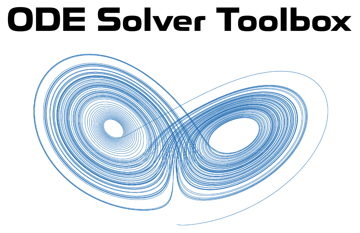

ODE Solver Toolbox Documentation

Copyright © 2021 Tamas Kis
Contents
- Technical Documentation
- Methology
- Opening this documentation using the MATLAB Command Window.
- Installation
- Explicit Runge-Kutta (Single-Step) Methods
- Adams-Bashforth (Multistep Predictor) Methods
- Adams-Bashforth-Moulton (Multistep Predictor-Corrector) Methods
- One-Step Propagation
- Tools for Matrix-Valued ODEs
- Generating ODE Solver Equations
- External Libraries
Technical Documentation
Click here.
Methology
All of the ODE solvers in this toolbox are implemented so that they can be used individually without relying on any other function. Additionally, all of the ODE solvers support both "time detection" (solving until some final time) and "event detection" (solving until some event occurs).
Opening this documentation using the MATLAB Command Window.
To open the home page (this page) of the toolbox documentation in MATLAB, type
doc_OST
in the Command Window. To open the documentation of a specific function with name function_name from the Command Window, type
doc_OST function_name
To open the PDF file with the technical documentation (Fixed_Step_ODE_Solvers.pdf) from the Command Window, type
doc_OST tech
Installation
The toolbox can be downloaded from File Exchange or GitHub. The downloaded zip folder contains the following:
- docs → Contains the HTML documentation needed by GitHub to deploy the online version of the toolbox documentation.
- examples → Contains examples for using various functions of the ODE solver toolbox, as well as examples for some more elementary concepts discussed in the technical documentation.
- INSTALL → Contains the toolbox installer (ODE Solver Toolbox.mltbx).
- licenses → Contains the software licenses.
- README.md → Markdown documentation for GitHub repository.
- Technical Documentation → Contains the technical documentation (Fixed_Step_ODE_Solvers.pdf).
- toolbox → Contains all the functions specific to this toolbox.
- toolbox/doc → Contains a copy of all the files and functions needed to open both the toolbox documentation and the technical documentation directly from the MATLAB command window using the doc_OST function.
- toolbox/lib → External libraries/functions required by this toolbox.
To install as a toolbox, simply open "ODE Solver Toolbox.mltbx" in the "INSTALL" folder. MATLAB will automatically perform the installation and add all the functions included in the toolbox to the MATLAB search path.
Alternatively, all the functions in the "toolbox" folder can be used independently, with the exception of the functions in the "toolbox/generatingequations" folder, which require the same_denominator function in "toolbox/lib".
Explicit Runge-Kutta (Single-Step) Methods
- oderk NEW.
- RK1_euler Euler method (1st-order).
- RK2 Midpoint method (2nd-order).
- RK2_heun Heun's second-order method (2nd-order).
- RK2_ralston Ralston's second-order method (2nd-order).
- RK3 (Kutta's) Runge-Kutta third-order method (3rd-order).
- RK3_heun Heun's third-order method (3rd-order).
- RK3_ralston Ralston's third-order method (3rd-order).
- SSPRK3 Strong stability preserving Runge-Kutta third-order method (3rd-order).
- RK4 (Classic) Runge-Kutta fourth-order method (4th-order).
- RK4_ralston Ralston's fourth-order method (4th-order).
- RK4_38 3/8-rule fourth-order method (4th-order).
Adams-Bashforth (Multistep Predictor) Methods
Adams-Bashforth-Moulton (Multistep Predictor-Corrector) Methods
- ABM2 Adams-Bashforth-Moulton 2nd-order method.
- ABM3 Adams-Bashforth-Moulton 3rd-order method.
- ABM4 Adams-Bashforth-Moulton 4th-order method.
- ABM5 Adams-Bashforth-Moulton 5th-order method.
- ABM6 Adams-Bashforth-Moulton 6th-order method.
- ABM7 Adams-Bashforth-Moulton 7th-order method.
- ABM8 Adams-Bashforth-Moulton 8th-order method.
One-Step Propagation
- RK1_euler_step Propagates the state vector forward one time step using the Euler method (1st-order).
- RK2_step Propagates the state vector forward one time step using the midpoint method (2nd-order).
- RK2_heun_step Propagates the state vector forward one time step using Heun's second-order method (2nd-order).
- RK2_ralston_step Propagates the state vector forward one time step using Ralston's second-order method (2nd-order).
- RK3_step Propagates the state vector forward one time step using (Kutta's) Runge-Kutta third-order method (3rd-order).
- RK3_heun_step Propagates the state vector forward one time step using Heun's third-order method (3rd-order).
- RK3_ralston_step Propagates the state vector forward one time step using Ralston's third-order method (3rd-order).
- SSPRK3_step Propagates the state vector forward one time step using the strong stability preserving Runge-Kutta third-order method (3rd-order).
- RK4_step Propagates the state vector forward one time step using the (classic) Runge-Kutta fourth-order method (4th-order).
- RK4_ralston_step Propagates the state vector forward one time step using Ralston's fourth-order method (4th-order).
- RK4_38_step Propagates the state vector forward one time step using the 3/8-rule Runge-Kutta fourth-order method (4th-order).
Tools for Matrix-Valued ODEs
- Matrix ODE Example Example for solving a matrix-valued ODE.
- odefun_mat2vec Transforms a matrix-valued ODE into a vector-valued ODE.
- odeIC_mat2vec Transforms the initial condition for a matrix-valued ODE into the initial condition for the corresponding vector-valued ODE.
- odesol_vec2mat Transforms the solution matrix for a vector-valued ODE into the solution array for the corresponding matrix-valued ODE.
Generating ODE Solver Equations
- AB_coefficients Coefficients for the mth-order Adams-Bashforth predictor.
- AM_coefficients Coefficients for the mth-order Adams-Moulton corrector.
- AB_predictor mth-order Adams-Bashforth predictor.
- AM_corrector mth-order Adams-Moulton corrector.
- ABM_equations mth-order Adams-Bashforth-Moulton equations.
- tableau2eqns Propagation equations from Butcher tableau for explicit Runge-Kutta methods.
External Libraries
- same_denominator Scales a set of fractions so they each have the same denominator.